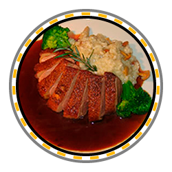
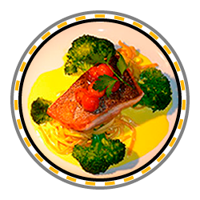
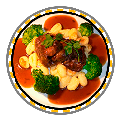
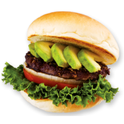
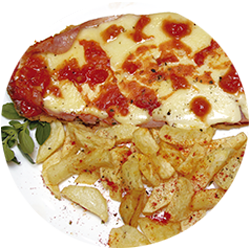

Sabor y alegría
Favoritos:





Arroz con Pollo Colombiano
El arroz con pollo es una receta tradicional de Colombia, un plato exquisito, muy nutritivo y fácil de preparar, si quieres hoy llevar a tu mesa un auténtico Arroz con Pollo Colombiano, aquí te compartimos la receta completa:
Ingredientes para 4 porciones:
- 1 pechuga de pollo
- 1 libra de arroz
- Pimentón
- Ajo
- Cebolla cabezona
- Zanahoria
- Arveja
- Habichuela
- Salchicha o chorizo
- Agua
- Sal
- Color
Caldo de Aipim
Este Caldo de Aipim es una receta clásica de la cocina brasileña, sus ingredientes son nutritivos y exquisitos, esta receta muy fácil de preparar te encantará. Ingredientes:
- 1 kilo de yuca
- 1 kilo de carne molida
- Ajo
- Cebolla
- Aceite de oliva
- Comino
- Cilantro
- Sal
- Pasta de tomate